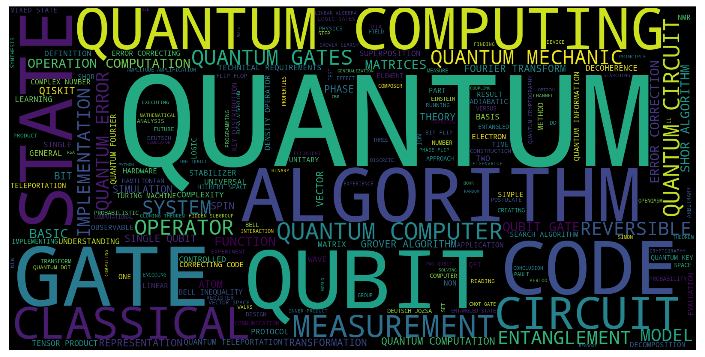

Introducción a la computación cuántica:
Fundamentos y aplicaciones para estudiantes de pregrado
Sustentación de trabajo de grado en la modalidad monografía para optar al título de "Licenciado en Física"
Harold Yesid Laserna Diaz
Director: Cesar Aurelio Herreño Fierro
Universidad Francisco José de Caldas
2022
Motivación
- Necesidad
- Marco de referencia
- Subjetividad
- Forma de aprendizaje propia
Motivación
- Necesidad
- Marco de referencia
- Subjetividad
- Forma de aprendizaje propia
Análisis bibliométrico
Consulta de base de datos
- Google Books
- Springer Link
Libros obtenidos entre 2008 y 2020
Análisis bibliométrico
Libros obtenidos:
| Editorial |
Cantidad |
| American Mathematical Society |
1 |
| Apress |
1 |
| Cambridge |
2 |
| Chapman and Hall |
1 |
| CRC press |
2 |
| John Wiley & sons |
1 |
| Manning |
2 |
| Massachusetts Institute of Technology |
1 |
| MIT press |
2 |
| Morgan & Claypool |
3 |
| Oxford University |
2 |
| Packt Publishing |
2 |
| Springer |
13 |
| World Scientific |
1 |
Tabla 1: Cantidad de libros por editorial afines a la computación cuántica.
Análisis bibliométrico
se obtuvo el índice de contenido de cada uno de los libros
y fue puesto en un documento de valores separados por comas (.cvs)

Figura 1: Recurrencia de palabras más usadas en los 35 libros analizados.
Capítulo 1: Algunas consideraciones matemáticas importantes
Capítulo 1: Algunas consideraciones matemáticas importantes
- Notación de Dirac
- Operadores
- Producto tensorial
- Notación O
- Binarios y decimales
Capítulo 1: Algunas consideraciones matemáticas importantes
- Notación de Dirac
- Operadores
- Producto tensorial
- Notación O
- Binarios y decimales
Capítulo 2: Breve introducción a la mecánica cuántica
Capítulo 2: Breve introducción a la mecánica cuántica
- Lógica aristotélica - Mecánica clásica
- Lógica difusa - Mecánica cuántica
Capítulo 2: Breve introducción a la mecánica cuántica
- Postulados mecánica cuántica
- Operador densidad
- Qubit
- Esfera de Bloch
Anexo: Uso de Python
- USO de computadores de IBM
- Libros no focalizados en computación cuántica
Anexo: Uso de Python
- Jupyter notebook como una TIC
- Jupyter notebook para edición personal
Anexo: Uso de Python
- Jupyter notebook como una TIC
- Jupyter notebook para edición personal
- GITHUB como repositorio de los notebooks
Capítulo 3: Computación cuántica
Capítulo 3: Computación cuántica
Los libros suponen que algunos procedimientos son fáciles de obtener.
Suposición de este documento: NINGÚN procedimiento es fácil ni evidente.
Procedimiento de los algoritmos PASO A PASO.
Capítulo 3: Computación cuántica
- Uso de Qiskit
- Compuertas cuánticas
- Estado de Bell
- Algoritmo de Deutsch-Jozsa
- Algoritmo de Grover
- Algoritmo de Shor
Capítulo 3: Computación cuántica
Objetivo: Enviar $\alpha$ y $\beta$ del estado construido por Alice:
\[\begin{aligned}
|\Psi\rangle = \alpha|0_{A}\rangle + \beta|1_{A}\rangle,
\end{aligned} \]
tal que mediante compuertas cuánticas y otras condiciones Bob obtenga:
\[\begin{aligned}
|\Psi'\rangle = \alpha|0_{B}\rangle + \beta|1_{B}\rangle.
\end{aligned} \]
Capítulo 3: Computación cuántica
Conclusiones
-
Se consolidó un currículo dirigido a la inmersión en la computación cuántica. Para llevar a cabo esto, se partió desde un análisis mediante la concurrencia de palabras, el cual generó un conjunto de palabras obtenidas de una base de datos construida mediante los índices de libros obtenidos desde 2010 hasta el 2020.
-
A la hora de identificar qué conceptos son necesarios dentro de la computación cuántica mediante la concurrencia de palabras, se encontró que actualmente existe la necesidad de aprender Python, mecánica cuántica y tener conocimientos elementales de información cuántica para poder usar un computador cuántico.
-
Se desarrolló un conjunto de notebooks los cuales están alojados en Github. Los respectivos links de Github por cada capítulo se encuentran señalados en cada capítulo.
Conclusiones
-
En este caso, es importante un análisis pedagógico de este trabajo, es decir, si claramente este trabajo serviría como un buen documento para los estudiantes, en otras palabras, si realmente ocurre un aplanamiento en la curva de aprendizaje.
-
Adaptar este trabajo para estudiantes de bachillerato. Ya que, al enseñar la Mecánica Newtoniana se necesita lógica aristotélica, entonces es posible que pueda trabajarse la computación cuántica desde la lógica difusa sin recurrir a la mecánica Newtoniana como requisito.
-
Como una aproximación profunda de la fenomenología física de un computador cuántico, hacer más extenso a este documento con la explicación de lo que realmente pasa con un computador cuántico, cómo se construyen y cuáles son los parámetros que lo hacen utilizable.
Referencias
- R. P. Feynman, “Simulating physics with computers,” Int. J. Theor. Phys, vol. 21, n.o 6/7,
1982.
- C. H. Bennett, “Logical reversibility of computation,” IBM journal of Research and
Development, vol. 17, n.o 6, págs. 525-532, 1973.
- E. Fredkin y T. Toffoli, “Conservative logic,” International Journal of theoretical physics,
vol. 21, n.o 3-4, págs. 219-253, 1982.
- R. P. Feynman, “Quantum mechanical computers,” Optics news, vol. 11, n.o 2, págs. 11-20,
1985.
- L. Burgholzer, R. Raymond y R. Wille, “Verifying results of the IBM Qiskit quantum circuit
compilation flow,” en 2020 IEEE International Conference on Quantum Computing and
Engineering (QCE), IEEE, 2020, págs. 356-365.
- P. W. Shor, “Algorithms for quantum computation: discrete logarithms and factoring,”
en Proceedings 35th annual symposium on foundations of computer science, Ieee, 1994,
págs. 124-134.
- V. Bhatia y K. Ramkumar, “An Efficient Quantum Computing technique for cracking
RSA using Shor’s Algorithm,” en 2020 IEEE 5th International Conference on Computing
Communication and Automation (ICCCA), IEEE, 2020, p ́ags. 89-94.
- A. Cross, “The IBM Q experience and QISKit open-source quantum computing software,”
APS, vol. 2018, p ́ags. L58-003, 2018.
- A. Dutt, Z. Vernon y C. Weedbrook, Methods and apparatus for producing highly tunable
squeezed light, US Patent 10,809,592, 2020.
- Google. (2021). “Google books,” dirección: https://www.google.com/search ?tbm=bks&q=quantum+computing (visitado 01-07-2021).
- Springer. (2021). “Springer Link,” dirección: https://link-springer-com.bdigital.udistrital.edu.co/ (visitado 01-07-2021)
- A. Mueller. (2021). “WorldCloud Library in Python,” dirección: https://link-springer-com.bdigital.udistrital.edu.co/ (visitado 02-07-2021).
- S. G. Krantz, A guide to complex variables. American Mathematical Soc., 2014, vol. 32.
- M. A. Nielsen e I. Chuang, Quantum computation and quantum information, 2002.
- V. Buzek y M. Hillery, “Quantum copying: Beyond the no-cloning theorem,” Physical Review A, vol. 54, n.o 3, págs. 1844-1852, 1996. DOI: 10.1103/physreva.54.1844. dirección: https://doi.org/10.1103%2Fphysreva.54.1844.
- H. F. Arena, “La biblia de Linux,” MP ediciones Buenos Aires Argentina, pags, vol. 264, 2009.
2009.
- R. González Duque, Python para todos, 2014.
Material audiovisual
Fuente: Youtube
Canal: Kurzgesagt – In a Nutshell
Vídeo: Quantum Computers Explained – Limits of Human Technology